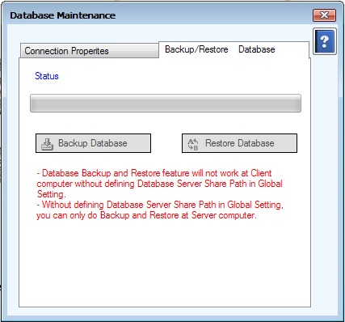

Database Utilities Setup
DataBaseUtilities Setup(ConnectionProperties)
DataBaseUtilities Setup(DataBaseBackup)

- System Utilities အောက်မှ Database Utilities အားနှိပ်ပါ။
- Database Maintenance Form သည် Database change ေပးသော Form ြဖစ်ပါသည်။
- Database Change လိုပါက Change Connection ကိုနှိပ်ပြီး Database change ေပးရမည်ဖြစ်သည်။
- မိမိသုံးမည့် Database သည် Local ဖြစ်ပါက Server Name တွင် (local) ဟု ရိုက်ထည့်ပြီး Window Authenications ကိုရွေးပါက Database တွင် Local တွင်ရှိနေသော Database များကိုတွေ့ရမည်ဖြစ်သည်။
- မိမိသုံးလိုသော Database အားရွေးပြီး Save Connection အားနှိပ်ပေးရမည်။
- မိမိသုံးမည့် Database သည် အခြားစက်မှ Database ဖြစ်ပါက Server Name တွင် အခြားစက်၏ Name ကိုရိုက်ထည့်ပြီး SQL Server Authentications ကိုရွေးပြီး User Name တွင် sa ဟုရိုက်ထည့်ပြီး Password တွင် global ဟုရိုက်ထည့်ပေးရမည်။ ထိုနောက် ၎င်းစက်တွင် ရှိနေသော Database များကိုတွေ့ရမည်ဖြစ်သည်။
- မိမိသုံးလိုသော Database အားရွေးပြီး Save Connection အားနှိပ်ပေးရမည်။
- ပြီးနောက် Close နှိပ်ပြီး ထွက်ရမည်ဖြစ်သည်။